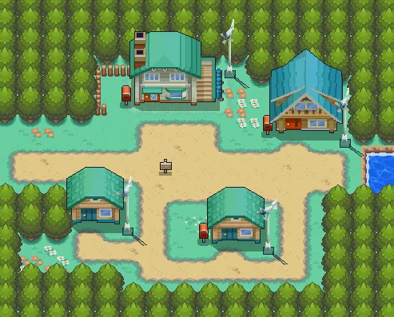
Pueblo Primavera
Un pueblo tranquilo donde, según dicen, sopla el viento de un nuevo comienzo. Aquí vive el protagonista y está el laboratorio del Profesor Elm.
Generación 2 · Oro, Plata y Cristal
Johto está al oeste de Kanto y se inspira en la región de Kansai, en Japón, donde están ciudades como Kioto y Osaka. Es una región tradicional, con templos, torres de madera, bosques sagrados y montañas, y su gente respeta mucho a los Pokémon legendarios.
Pokémon Oro y Pokémon Plata salieron en Japón en 1999 (en España, en 2001). Fueron los primeros con reloj, así que había día y noche, y trajeron 100 Pokémon nuevos, los tipos Siniestro y Acero, la crianza de Pokémon y los objetos equipados. Después llegaron Cristal y, en 2009 (en España, en 2010), los remakes Oro HeartGold y Plata SoulSilver.
La historia pasa tres años después de Rojo y Azul. Hay que conseguir las ocho medallas de Johto y vencer a la Liga, pero ese no es el final: después puedes viajar a Kanto, ganar también sus ocho medallas y subir al Monte Plateado para enfrentarte al entrenador más fuerte.


Un pueblo tranquilo donde, según dicen, sopla el viento de un nuevo comienzo. Aquí vive el protagonista y está el laboratorio del Profesor Elm.
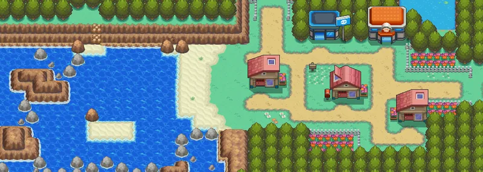
Una pequeña ciudad junto al mar. Un anciano muy simpático te enseña dónde está cada cosa.
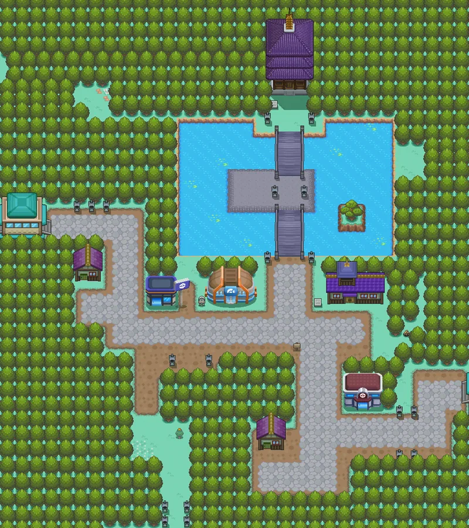
Una ciudad antigua con la Torre Bellsprout, una torre de madera cuyo pilar central se balancea. Cerca están las Ruinas Alfa.
Gimnasio: Volador
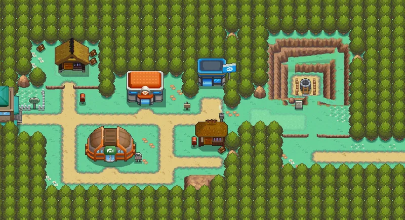
Un pueblo junto al Pozo Slowpoke. Aquí vive Kurt, un anciano que fabrica Poké Balls con bonguris.
Gimnasio: Bicho
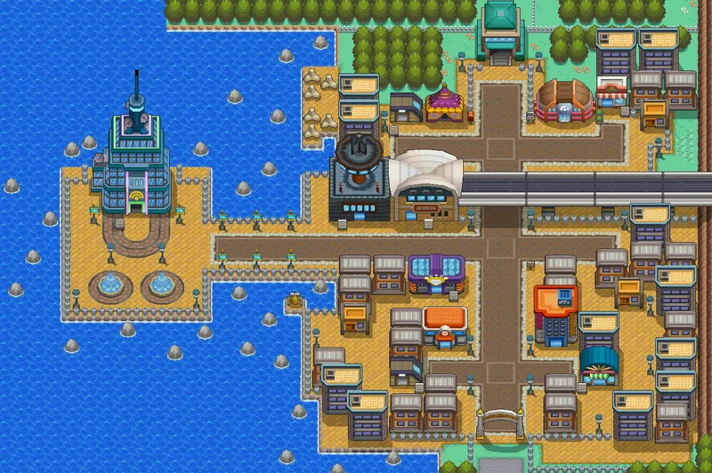
La ciudad más grande de Johto, con un centro comercial, la estación del Magnetotrén y la Torre Radio.
Gimnasio: Normal
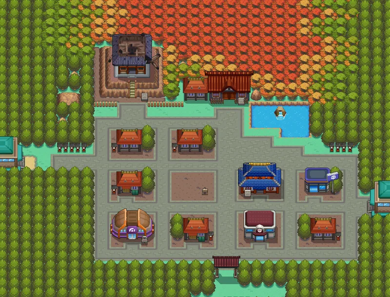
La ciudad de la tradición. Tiene dos torres antiguas: la Torre Quemada y la Torre Hojalata, donde se posa Ho-Oh.
Gimnasio: Fantasma
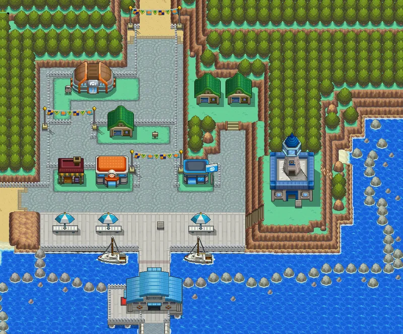
Una ciudad con puerto y un faro. En lo alto vive Amphy, el Ampharos que lo ilumina, que se ha puesto enfermo.
Gimnasio: Acero
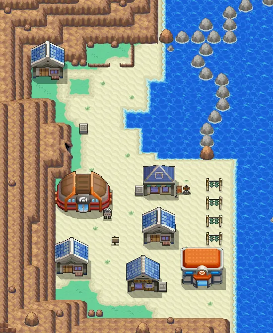
Una ciudad en la costa, al otro lado del mar, con una farmacia que prepara medicinas especiales.
Gimnasio: Lucha
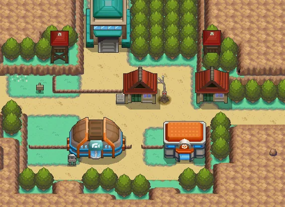
Un pueblo pequeño entre montañas. Su tienda de recuerdos esconde la base secreta del Team Rocket.
Gimnasio: Hielo
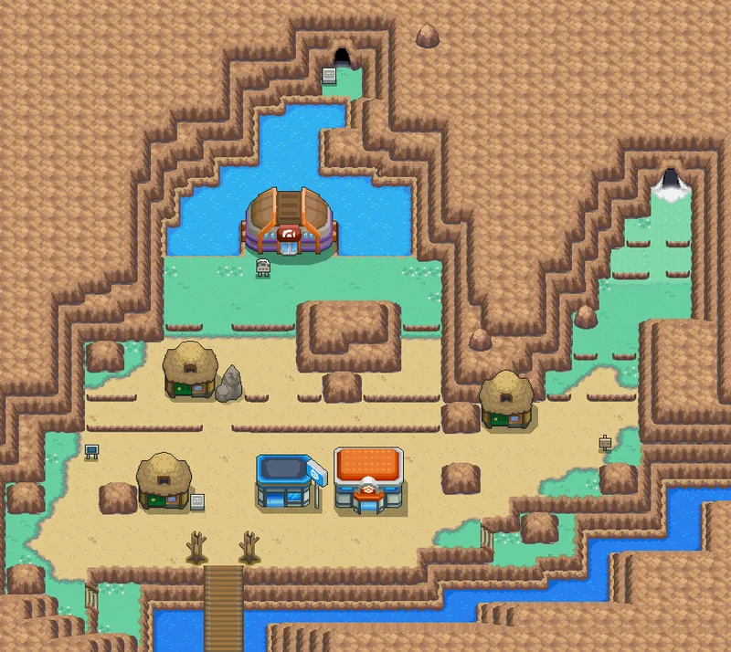
Una ciudad rodeada de montañas, hogar de un clan de domadores de dragones. Detrás del gimnasio está la Guarida Dragón.
Gimnasio: Dragón
Pulsa en un Pokémon para verlo en grande.
Fuego Volador
El Pokémon arcoíris. Se posa en lo alto de la Torre Hojalata y es el legendario de Oro y de HeartGold.
Psíquico Volador
El guardián de los mares, que duerme en las Islas Remolino. Es el legendario de Plata y de SoulSilver.
Eléctrico
Uno de los tres Pokémon que Ho-Oh revivió tras el incendio de la Torre Quemada. Corre por toda la región.
Fuego
Otro de los tres Pokémon revividos por Ho-Oh. Dicen que, cuando ruge, entra en erupción un volcán.
Agua
El tercero, capaz de purificar el agua sucia. En Cristal tiene un papel muy importante en la historia.
Psíquico Planta
Un Pokémon que viaja en el tiempo y protege los bosques. Solo se podía conseguir en eventos especiales.
Tres años después de que Giovanni disolviera el Team Rocket, sus antiguos miembros se vuelven a juntar en Johto. Ya no tienen jefe, así que su plan es encontrarlo y convencerlo para que vuelva.
Esta vez el Team Rocket está dirigido por cuatro ejecutivos. En Oro, Plata y Cristal no tienen nombre; en HeartGold y SoulSilver se llaman Atlas, Atenea, Protón y Petrel.
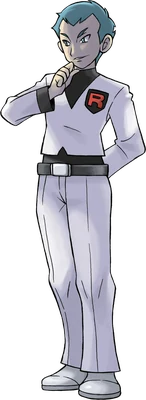
Líder del Team Rocket en Johto
El ejecutivo más importante. Mientras Giovanni no está, es él quien da las órdenes y prepara el gran plan de la Torre Radio.
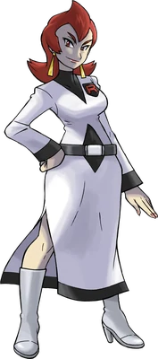
Ejecutiva. Es seria, dura y muy fiel a Giovanni.
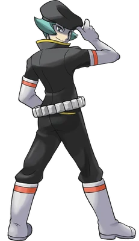
Ejecutivo. Presume de ser el más cruel del Team Rocket y dirige el plan del Pozo Slowpoke.
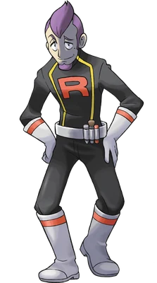
Ejecutivo. Le encanta disfrazarse; en la Torre Radio llega a hacerse pasar por el director.
Los ocho gimnasios de Johto, en el orden normal del viaje. Los de Aníbal y Yasmina se pueden hacer en cualquier orden.
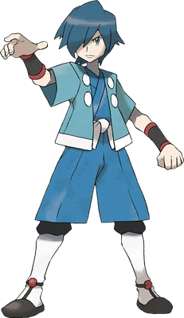
Ciudad Malva
Volador · Medalla Céfiro
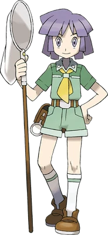
Pueblo Azalea
Bicho · Medalla Colmena
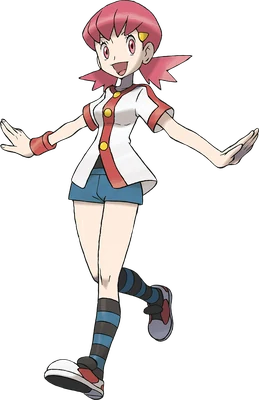
Ciudad Trigal
Normal · Medalla Planicie
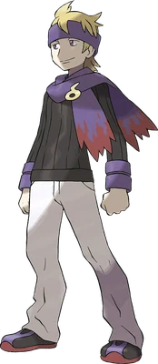
Ciudad Iris
Fantasma · Medalla Niebla
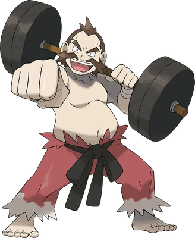
Ciudad Orquídea
Lucha · Medalla Tormenta
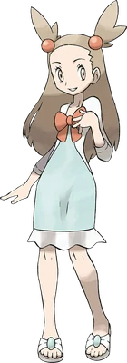
Ciudad Olivo
Acero · Medalla Mineral
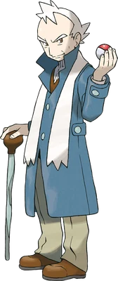
Pueblo Caoba
Hielo · Medalla Glaciar
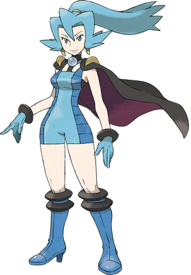
Ciudad Endrino
Dragón · Medalla Dragón
La Liga sigue en la Meseta Añil, en la frontera con Kanto, pero el Alto Mando ha cambiado: Koga y Bruno siguen, ahora con Mento y Karen, y el nuevo Campeón es Lance.
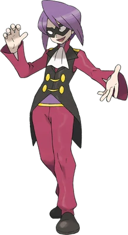
Alto Mando
Psíquico
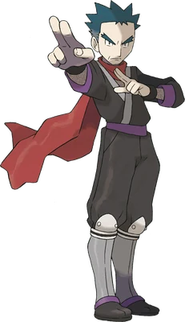
Alto Mando
Veneno
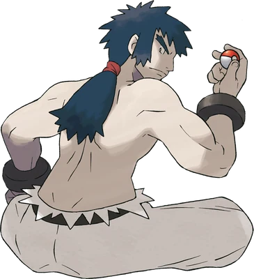
Alto Mando
Lucha
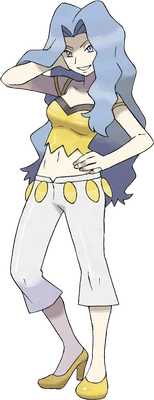
Alto Mando
Siniestro
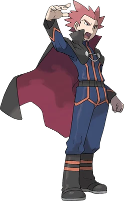
Campeón
El maestro de los dragones. Te ayuda a acabar con el Team Rocket en Pueblo Caoba y luego te espera como Campeón.
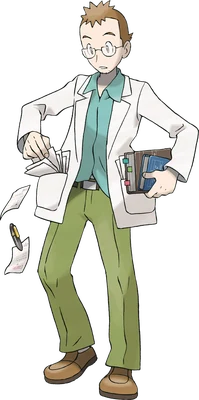
Investiga los huevos Pokémon y cómo nacen. Te deja elegir tu primer Pokémon y te pide que le hagas un recado para un amigo, el Señor Pokémon.
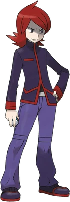
Tu rival. Roba un Pokémon del laboratorio del Profesor Elm y trata mal a sus Pokémon porque solo le importa ganar, aunque poco a poco cambia. Es el hijo de Giovanni.
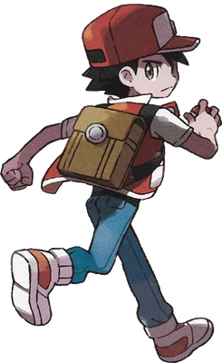
El protagonista de Rojo y Azul. Después de ganar la Liga te espera en silencio en la cima del Monte Plateado, y es el rival más difícil del juego.
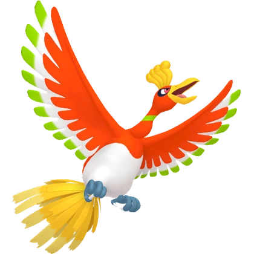
Ho-Oh
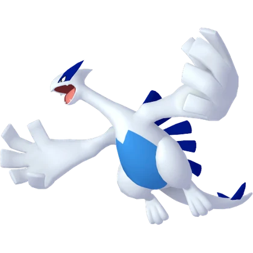
Lugia
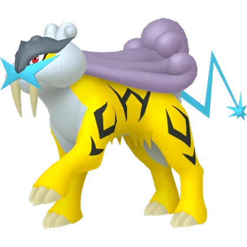
Raikou
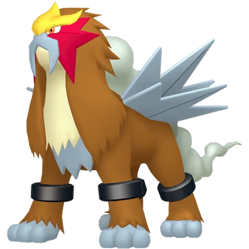
Entei
Suicune
Celebi
Pidgeotto
Scyther
Miltank

Gengar
Poliwrath
Steelix
Piloswine
Kingdra
Xatu
Crobat

Machamp
Houndoom

Dragonite